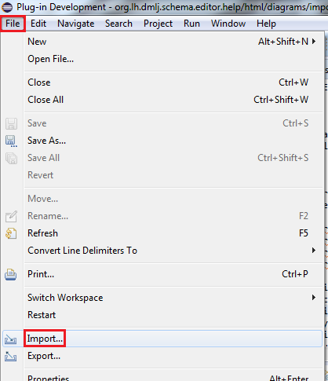
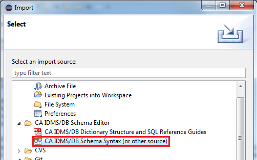
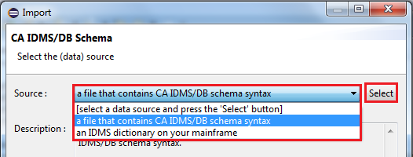
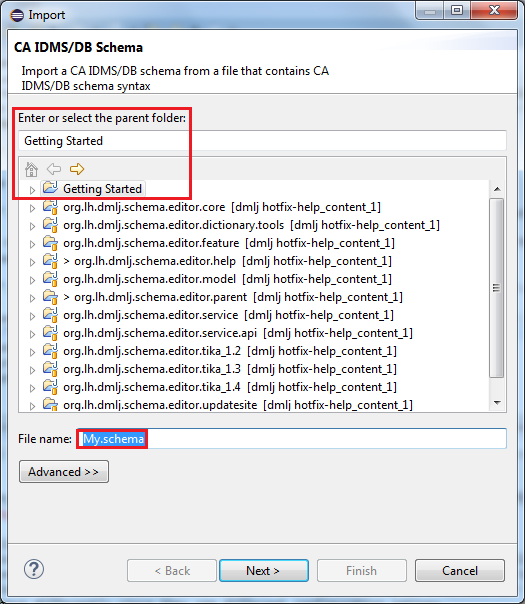
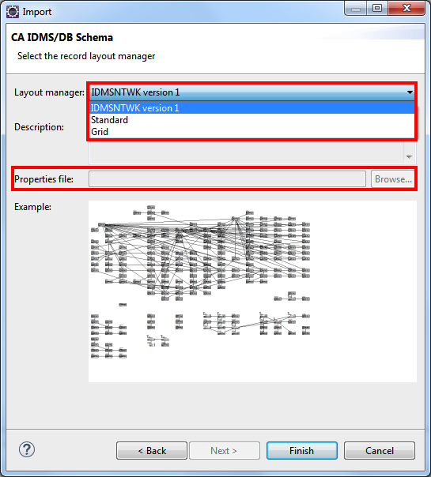
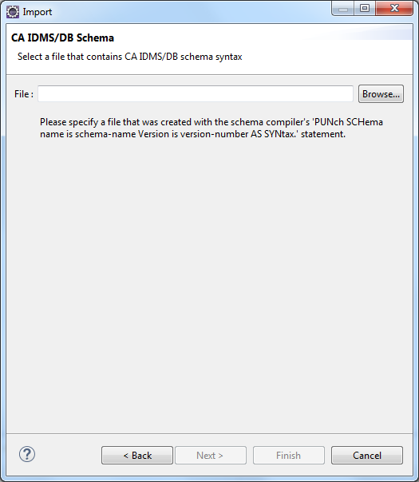

Importing a Diagram
Contents
Starting the Import Wizard
You can create a diagram for an existing CA IDMS/DB schema via a dedicated import wizard. This
wizard can be selected on the import wizard selection dialog, which is accessed via the
"File"/"Import" menu item :

Select the import wizard in the import wizard selection dialog :

The first thing you need to do in the import wizard is to select the data source. There will be at
least 2 available data sources :

If you have installed 1 or more custom import tools, they will show up in the above list as well.
Press the "Select" button before going to the next wizard page. Select the parent folder and name
of the file that will hold the diagram; the file extension MUST be ".schema" :

Once you have selected the target file for the diagram, the next wizard pages vary depending on the
data source selected. Each standard import tool is described hereunder. The final page is
ALWAYS the 'record layout manager selection page'; on that page you specify how the records in the
diagram should be placed initially :

Note that 2 dedicated record layout managers are available, 1 for the EMPSCHM version 100 schema and
1 for IDMSNTWK version 1 (none of these will be listed for any other schema).
The standard record layout manager places all records adjacent to each other and will produce an
equal number of rows and columns.
The grid record layout manager allows you to provide a properties file that contains the location of
each record :
COVERAGE=D3
DENTAL-CLAIM=E5
DEPARTMENT=A2
EMPLOYEE=C3
EMPOSITION=C1
EXPERTISE=C5
HOSPITAL-CLAIM=E3
INSURANCE-PLAN=D5
JOB=B1
NON-HOSP-CLAIM=E1
OFFICE=A4
SKILL=B5
STRUCTURE=D1
Importing from Schema Syntax
When importing a diagram from schema syntax, you need to select the file containing the schema
syntax :

Importing from a Dictionary
Custom Import Tools
You can create your own diagram import tools via the "org.lh.dmlj.schema.editor.core.import"
extension point. The custom import tools you create will show up on the very first import wizard
page (see above).
Describing in detail how to build your own custom import tool (data source) is beyond the scope of
this help document. You can take the "an IDMS dictionary on your mainframe" data source, which is
defined in the "org.lh.dmlj.schema.editor.dictionary.tools" plug-in project, as an example.